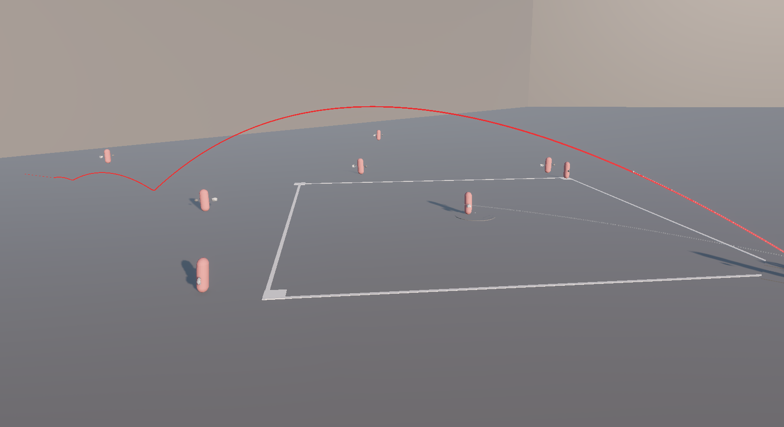
확대 보기 ↗이벤트 기반 타구 궤적 시뮬레이션
매 프레임 반복 계산하지 않고 투구·배트 접촉·지면 바운드 시점에만 predictBallPath() 를 1회 호출해 불필요한 연산을 제거했습니다. BallTrajectory 가 실제 물리(Ball.FixedUpdate)와 동일한 항력·백스핀 양력·구름 마찰(BallAero)을 적분해 예측과 실제 낙구 궤적을 일치시켰습니다.
유연하고 안정적인 구조를 설계하고, 항상 프로젝트에 어울리는 UI/UX를 고민하고 미세한 디테일을 놓치지 않으면서 성능까지 고려하여 하나의 작품을 만들기 위해 노력합니다.
검색 조건과 일치하는 프로젝트가 없습니다.
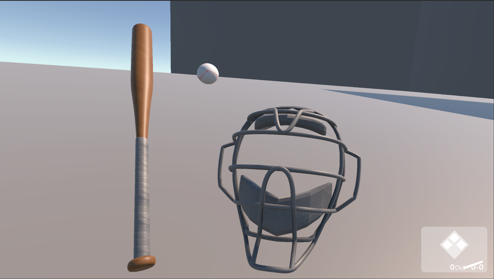
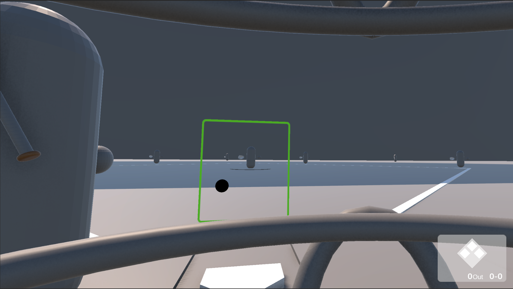
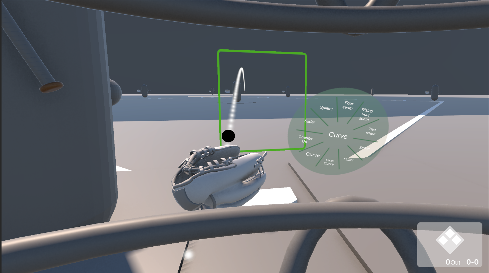
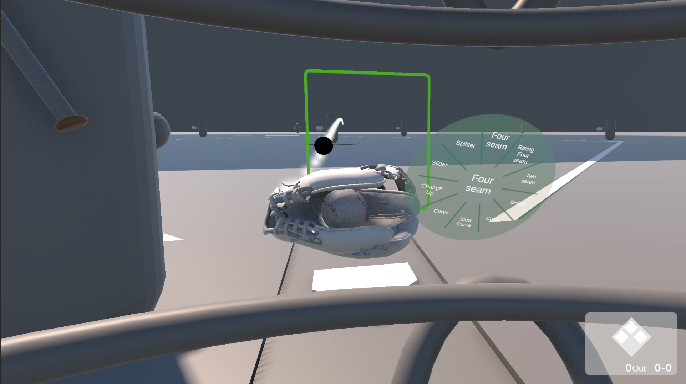

확대 보기 ↗매 프레임 반복 계산하지 않고 투구·배트 접촉·지면 바운드 시점에만 predictBallPath() 를 1회 호출해 불필요한 연산을 제거했습니다. BallTrajectory 가 실제 물리(Ball.FixedUpdate)와 동일한 항력·백스핀 양력·구름 마찰(BallAero)을 적분해 예측과 실제 낙구 궤적을 일치시켰습니다.
BaseballPlayer → PlayerRole (Defencer / Attacker) 상속 구조로 공통 기능을 재사용하고, FieldingCoordinator 가 타구 도달 시간과 수비 존·콜 우선순위를 계산해 10단계 FSM (FIELDER_STATE) 기반 포구·중계·베이스 커버·백업 역할을 동적 배정합니다.
Fixed Timestep 을 0.001s (Maximum Allowed Timestep 0.01s)로 최적화하고, 공 Rigidbody 충돌 감지를 ContinuousDynamic 으로 설정해 고속 충돌 누락을 차단.addForce)에서 타겟 밖으로 크게 벗어남.t)과 꺾임 가속 구간(t3), 중력 낙하·추가 가속 변위(0.5 · addForce · t3²)를 사전 계산해 오차 벡터(p)를 도출하고, 반대 방향 보정 좌표로 릴리스 각도를 역조준.bool 상태 남발 리팩터링_isXXXX 형태의 개별 bool 상태 변수를 계속 추가해, 조건 분기가 비대해지고 유지보수가 어려워짐.DEFENSIVE_ROLE)과 10단계 행동 상태(FIELDER_STATE)를 단일 enum 기반 FSM 변수로 통합 정리해 상태 전이와 디버깅 제어를 단순화.PitchingController · BallValueProvider
10종 구질(PITCHING_MODE)의 구속·꺾임 시점·가속 축을 반영해 목표 지점 이탈 오차만큼 릴리스 각도를 역조준
BallProjectileCalculator · BallTrajectory
매 프레임 재계산 대신 투구·타격·바운드 시점에만 1회 실행해 공기역학(BallAero)·바운드·구름 궤적 및 Version 갱신
Bat · BallAero
배트 스위트 스폿 거리와 정타 품질, 스윙 속도로 발사각·초속을 산출하고 구장 규격(CarrySpeedScale)에 맞춰 보정
BaseballPlayer · FieldingCoordinator
공통 기능을 PlayerRole 상속으로 공유하고, 최근접 포구자·커버·중계·백업을 10단계 FIELDER_STATE FSM으로 제어
Glove · CountsProvider
HasTouchedGround 기반 플라이 아웃 판정, 파울라인·스트라이크 존 검증 및 볼카운트·주자 상태 갱신
PitchingController.getTargetPosition() 에서 변화구 꺾임 변위를 역산 보정해 제구 정확도 확보Fixed Timestep 0.001s 및 ContinuousDynamic 충돌 감지로 튜닝 하고, XR Interaction Toolkit 기반 글러브 포구(Glove)를 구현Ball 상태 플래그로 투구·타구·송구 제어권을 분리하고 물리 이벤트(투구·타격·바운드) 발생 시점에만 궤적을 1회 시뮬레이션 해 매 프레임 불필요한 계산을 방지 (RaycastNonAlloc 버퍼 재사용)BallTrajectory 와 Ball.FixedUpdate() 가 동일한 공기역학 공식(BallAero: 항력·백스핀 양력·바운드 반발·구름 마찰)을 공유 하도록 설계해 예측 낙구 지점과 실제 이동 궤적을 일치시킴BaseballPlayer → PlayerRole (Defencer / Attacker) 상속 계층을 구축 하고, 10단계 수비 행동을 간결하게 제어하기 위해 enum FSM (FIELDER_STATE · DEFENSIVE_ROLE) 으로 관리HasTouchedGround 플래그로 바운드 후 포구를 구분해 노바운드 플라이 아웃·스트라이크 존·파울 판정(CountsProvider) 정확도 보완 (실기기/에디터 구동 시 체감 프레임 드랍 없음 · 별도 Profiler 수치 미계측)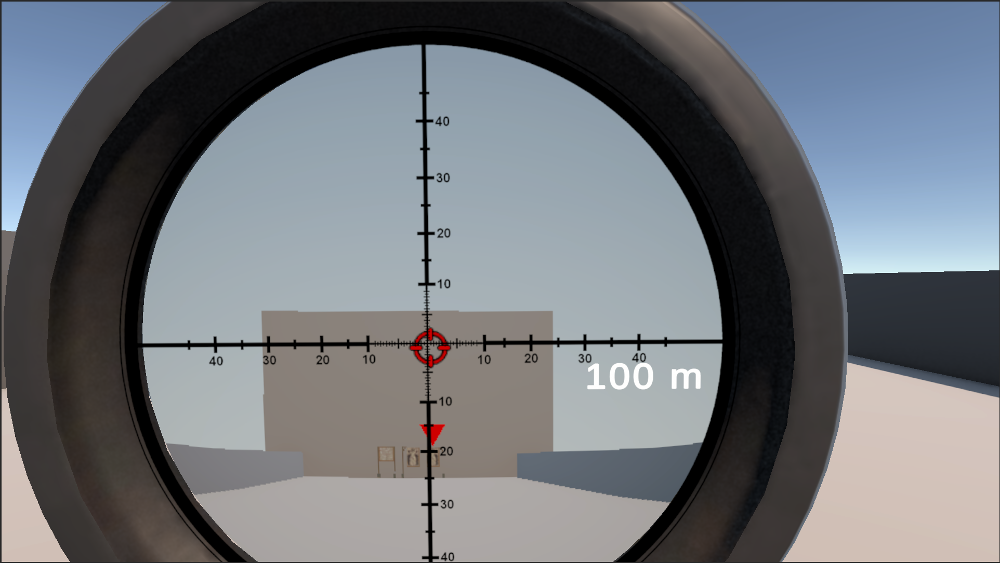
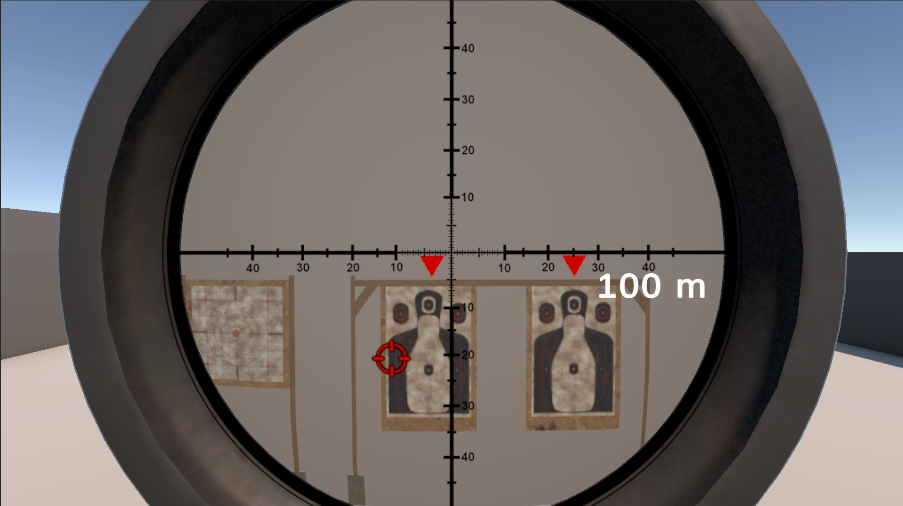
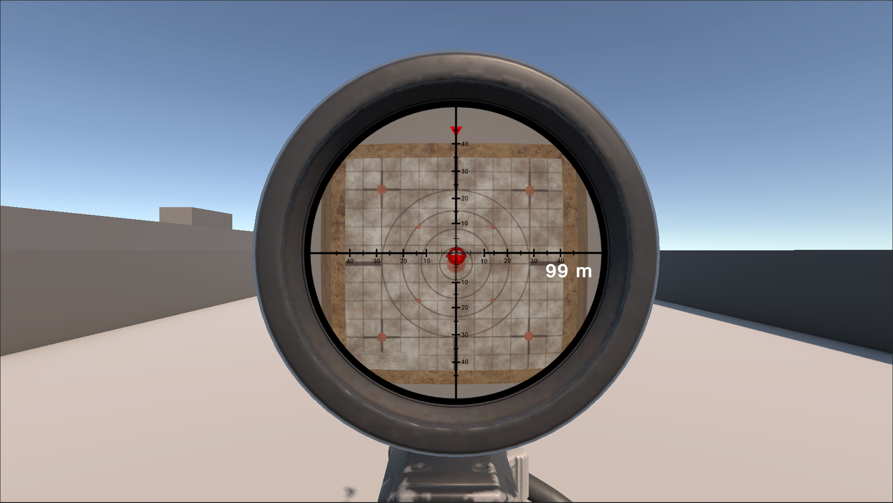
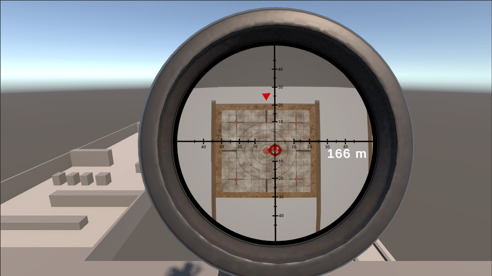
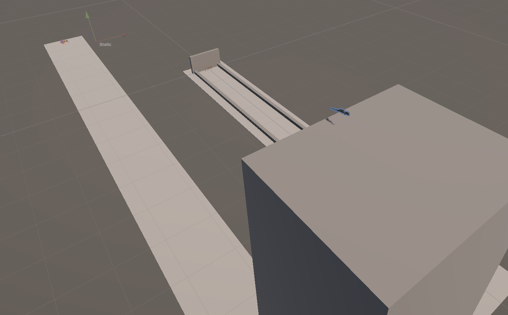
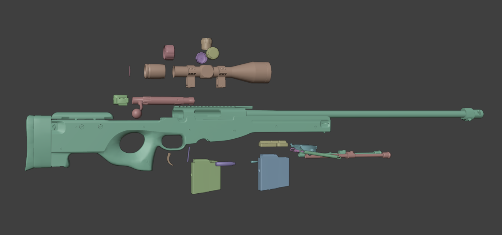
확대 보기 ↗저격총 3D 모델을 실린더·슬라이드·볼트·다이얼 등 개별 파츠로 분리 모델링해, 슬라이드 가변저항 값과 당김/밀기 방향에 따라 실린더 Z축이 실시간으로 이동하고 탄피 배출(PopOut)·재장전(PushIn)이 순차 트리거되는 물리 기반 볼트 액션 메커니즘을 구현했습니다.
Tagger 가 레이캐스트로 목표물 거리를 측정하고 중력·바람(WindController) 편차를 적분해 실시간 탄착 마커를 표시합니다. 배율뿐 아니라 사거리(dist)를 함께 반영해 거리 변화에 따른 마커 비율 왜곡을 보정했습니다.
loop() 안에서 주기적으로 센서 값을 읽는 풀링(Polling) 방식으로 엔코더를 처리해, 다이얼을 빠르게 돌리거나 접점이 튈 때 입력이 빠지거나 한 번에 여러 번 중복 입력되는 현상이 발생.PinChangeInterrupt) 방식으로 교체하고, 상태표(enc_table)로 잘못된 튐(delta = 0)을 걸러 1클릭당 1스텝(value / 4)씩 정확히 읽히도록 개선.zoomRatio)에만 맞춰 스케일을 조정(Lerp)했더니, 목표물 거리가 달라질 때마다 화면 내 마커 비율이 일정하지 않게 커지거나 작아지는 문제가 발생.Tagger 로 옮겨 사거리(dist)와 스코프 배율(Scope.ZOOM)을 함께 반영(0.03f × dist / Scope.ZOOM)해 거리에 상관없이 일정한 비율로 표시되도록 보정하고, 미충돌 시에는 마커를 비활성화해 잔상을 제거.Arduino Uno
360도 로터리 엔코더 3개(영점·편향·디버깅용 시차)와 회전(줌)·슬라이드(장전) 가변저항 신호를 수신
enc_table (ISR)
PinChangeInterrupt ISR이 상태표로 바운싱(delta=0)을 걸러 1클릭 4스텝(value/4)을 정규화하고, 가변저항은 데드존(줌 >1 · 슬라이드 >3)으로 떨림 억제
20ms · 9600 baud
값 변화가 발생한 센서 키만 "E:10;W:-2;R:80" 형식으로 조합해 20ms 주기로 USB 시리얼 송신
ArduinoConnection · SensorDataUpdateEvent
Update() 에서 BytesToRead 로 대기 없이 1바이트씩 읽어 '\n' 단위로 파싱하고, 변경된 키(_curData)만 UnityEvent로 전달
Scope · Cylinder · Tagger
Lerp 보간으로 스코프 FOV·다이얼·실린더 Z축을 동기화하고, 사거리·중력·바람 기반 탄착 가이드 렌더링
E)·편향(W)·배율(Z)과 장전(R)은 아두이노 우노 기반 360도 로터리 엔코더 3개(시차 P는 디버깅용)·가변저항 2종 으로 분리 제어 (9600 baud · 20ms 주기)PinChangeInterrupt + enc_table 상태표 인터럽트 로 전환하고, 가변저항 데드존(줌 >1 · 슬라이드 >3) 및 실물 회전 방향 역보정을 직접 튜닝ArduinoConnection.Update() 에서 serialPort.BytesToRead 기반 논블로킹 버퍼링(ReadTimeout=1ms) 으로 메인 스레드 대기를 막고, 변경 키(_curData)만 이벤트로 발행해 불필요한 갱신을 차단reloadValue > 80)와 당김/밀기 방향에 따른 실린더 Z축·탄피 배출(PopOut)·급탄(PushIn) 볼트 액션 및 BulletPool 재사용 구현Tagger · WindController 로 레이캐스트 사거리와 중력·풍속 편차를 실시간 계산하고 사거리(dist)와 배율(Scope.ZOOM) 연동 탄착 마커 스케일 보정 적용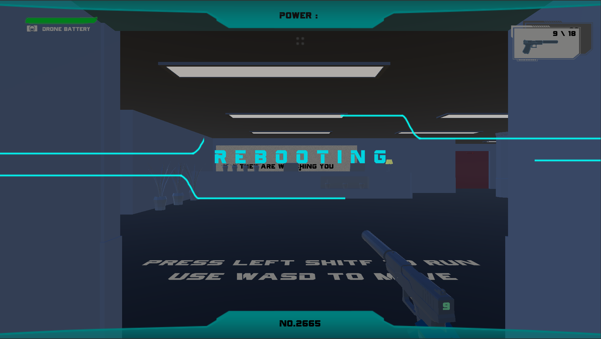
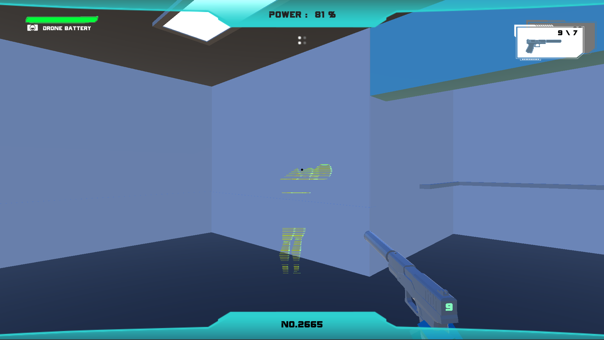
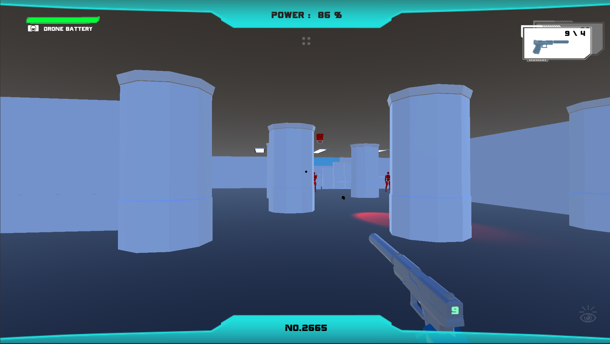
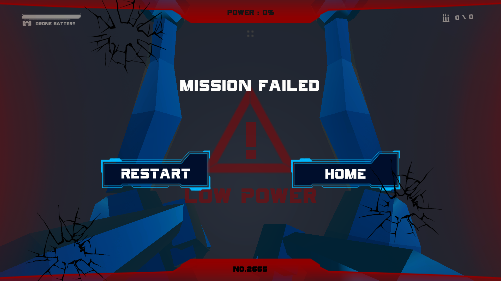
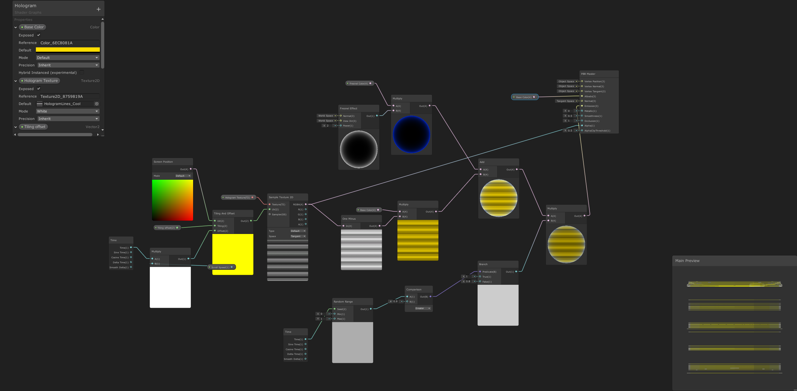
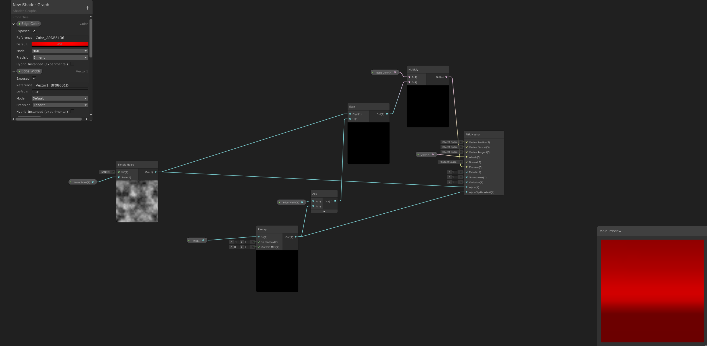
CCTV 와 AI 에서 유리 레이어(CCTV_Glass)는 투과하고 벽·기둥은 차폐하는 다중 레이캐스트로 3D 시야각을 구성해 노출 시간만큼 인지 게이지(ui.See)를 누적했습니다. 임계치 도달 시 순찰 중이던 적이 플레이어 좌표를 추적(NavMeshAgent)·사격 전환되며, CCTV 파괴 및 파손 오브젝트(Broke) 시선 유도로 잠입 변수를 설계했습니다.
Q 입력 시 애니메이션 이벤트(Throw)로 드론을 물리 투척(AddForce)하고, ChangeView.Change 페이드 단계에 맞춰 Player 와 Hero 간 카메라·PostProcessVolume·AudioListener·HUD 를 일괄 스왑합니다. 드론 조종 중에는 시선 각도에 따라 도약 물리(Jump)를 분기하고, Hold E 레이캐스트 유지로 ASCII 난수 해킹 완료 후 상위 Door 계층을 재귀 탐색(CheckName)해 잠금을 해제합니다.
ChangeValue())에서 플레이어 BoxCollider 를 비활성화(enabled = false)하고 Rigidbody.isKinematic 으로 전환해 본체 물리 간섭을 차단했으며, 드론 콜라이더(isTrigger)와 카메라·HUD 를 일괄 스왑하고 회수 시 원상 복구되도록 해결.Animation Event(Throw·SetParent·Stealth_Hp)를 스크립트 로직과 직결했으며, 인게임 HUD·조준선·옵션 UI 도 Photoshop 으로 직접 그려 일정을 맞춤.Logo · Loading · Option
책상 모니터 Raycast 3D 메뉴와 LoadSceneAsync 90% 게이지 로딩, 런타임 디스플레이·스피커·조준선 옵션 및 ESC 일시정지 제어
Player · Stealth · Gun
앉기·질주에 따른 BoxCollider 크기·비네트·발소리 연동, V 무기 전환 및 Animation Event 재장전·은밀 암살(Stealth_Kill) 동기화
ChangeView · Hero · Door
6단계 ChangeView.Change 페이드로 본체↔드론 물리·카메라 스왑, 각도 분기 도약(Jump) 및 Hold E 해킹으로 Door 잠금 해제
CCTV · AI · Alarm
유리 투과·벽 차폐 다중 레이캐스트로 인지(ui.See) 누적, 임계치 도달 시 AI 추적·사격 전환 및 Stage 2 발포 경보 처리
Player_Map · Ending
Stage 0~6 구역 활성화 및 지속 소모 Player_Hp(처치·층 이동 회복) 관리, 최종 단말기 TASKKILL 직접 타이핑으로 종료
Player · Hero 6단계 페이드 시점 전환(ChangeView.Change) 및 물리 간섭 차단 : 본체 BoxCollider 비활성화·isKinematic 전환, 카메라·PostProcessVolume·AudioListener·HUD 스왑 및 회수 초기화Reload 빈 탄창 분리(Magazine_Trash_Can)·신규 탄창 부모 재결합(SetParent), 암살 시 적 NavMeshAgent 정지 및 Enemy_Pos 좌표 고정Crouch) · 시선 피치(Offset) 연동 BoxCollider 동적 보정 : 앉기 전환 시 콜라이더 높이·중심 축소(18 ↔ 10, 0.4 ↔ -4)로 환풍구 통과 지원 및 상하 시선 각도 기반 전방 중심 보정Jump) · 원격 해킹 & 상위 Door 재귀 탐색 : 전방/상향 시선에 따른 수직·수평 점프 분기, Lock 레이어 홀드 시 0.08초 주기 ASCII 스크램블링 후 부모 계층(CheckName · FindDoor) 역추적 잠금 해제Auto_Hp) · AI 행동 분기(Sit/Talk) & 다층 스테이지(Player_Map) : 헤드샷(Enemy_Head) 즉사 vs 몸통 4발·스파크/연기 연출, 키카드·탄약 드롭, Stage 0~6 구역 전환·Power 자원 관리 및 Ending.cs 타이핑 엔딩Option.cs) · 3D 메뉴(Logo.cs) · Photoshop UI & 사운드 풀(Sound.cs) : 품질·해상도·FullScreenMode·AudioSpeakerMode·조준선 3종/색상 변경, LoadSceneAsync 로딩 및 일반·3D·드론 오디오 분리 재생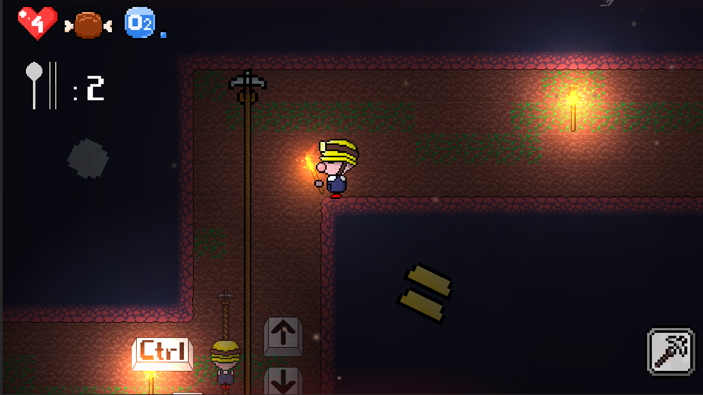
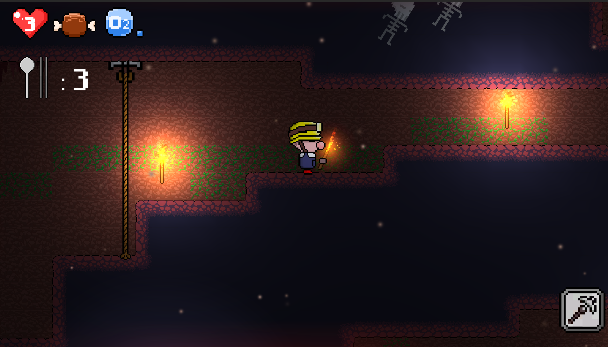
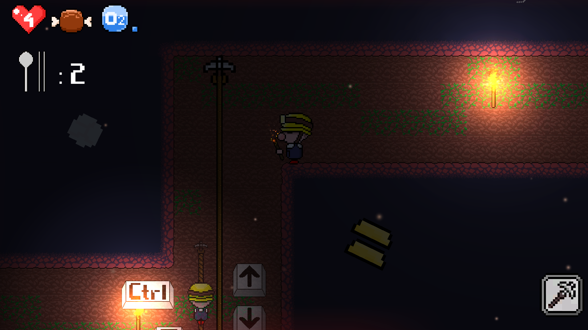
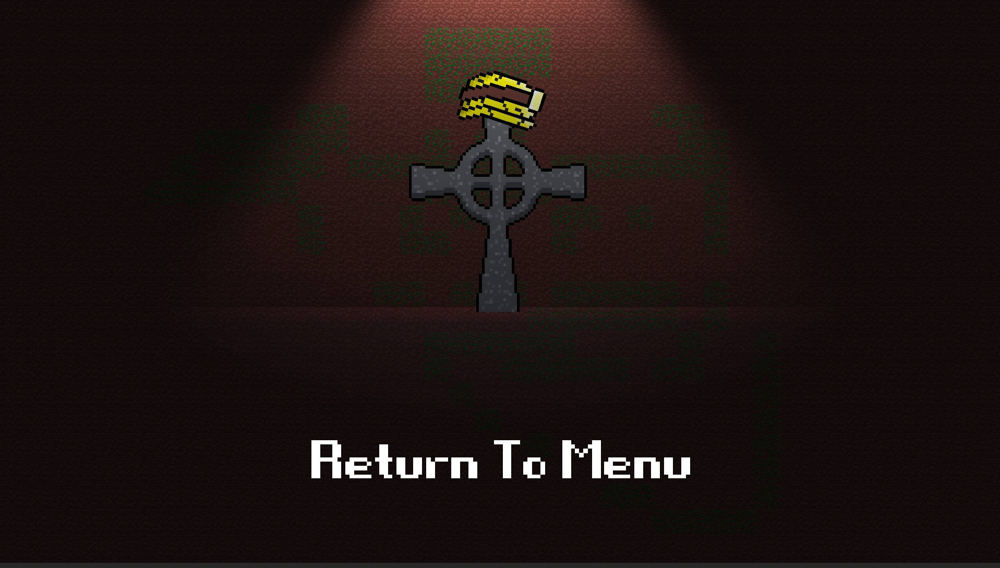
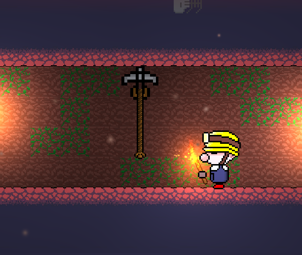
Z 키로 갈고리(Hook)를 발사해 천장 타일(Layer 8)에 고정되면 플레이어와의 거리만큼 로프 마디를 동적으로 생성하고 HingeJoint2D 로 연결해 매달리기·오르내리기·이탈 도약을 구현했습니다. Shift 키로 여는 미니맵(MiniMap)은 원본 안개 텍스처를 Graphics.CopyTexture 로 복제한 뒤, 0.3초 마다 플레이어 뷰포트 좌표 주변 픽셀의 알파값을 SetPixel 로 지워 지나온 경로를 남깁니다.
어두운 동굴 시야는 Built-in Light 와 확산 머티리얼(Light.mat)을 조합해 횃불 주변만 밝히도록 구성하고, UI 스크립트에서 시간 경과에 따라 광원 반경(Light.range)·파티클·산소(O2)·허기 게이지를 실시간 감쇠시켜 생존 압박을 유지했습니다. 벽 횃불 접촉 시 불빛이 즉시 복구되며, 산소통·식량·모닥불 조리(Camp) 및 몬스터·함정 회피를 하나의 탐험 루프로 구성했습니다.
4:3·16:10·21:9·32:9 등)가 달라질 때 UI 와 달리 2D 월드 오브젝트가 화면비 변화에 맞춰 함께 대응되지 않아, 특정 비율에서 배경·지형 배치가 어긋나거나 화면 밖으로 잘리는 문제가 발생.Resize 스크립트를 배치하고, 유클리드 호제법(GetGreatestCommonDivisor)으로 현재 해상도(및 옵션 변경 해상도)의 화면비를 계산해 비율별 보정 스케일(ScaleResize)로 최상위 오브젝트의 localScale 을 일괄 조정하여 대응.Pivot) 기준이 통일되지 않아, 타일맵 조립 및 캐릭터 애니메이션 연결 시 그래픽 위치가 어긋나는 문제가 반복 발생.PPU(Pixels Per Unit) 기준과 캔버스·피벗 추출 규격을 직접 가이드·교육해 반복 수정 작업을 제거.Intro · Logo · Loading · Menu
오프닝·로고 컷신(Skip 지원)과 LoadSceneAsync 로딩, 해상도·전체화면·BGM/SFX 옵션(SoundValue) 설정
Resize · ScaleResize
최대공약수 기반 화면비 판별로 7개 씬 최상위 월드 오브젝트 localScale 및 스크롤 속도(AutoSpeed) 동시 보정
Hero · Hook · Collision
이동·점프·무적 상태머신(Jump·Sup), 천장 Raycast 고정 후 HingeJoint2D 로프 마디 동적 생성·등반 처리
UI · Camp · Door · Action
O2·허기·Light.range 실시간 감소와 모닥불 조리, 랜덤 맵 3회 순환 후 BeforeScene 낙석 탈출 연결
Enemy · Trap · MiniMap · Sound
몬스터 4종·함정 3종 대응, 0.3초 주기 MiniMap 픽셀 갱신, 13종 SOUND 풀 및 GoldWave 편집 적용
Intro · Logo · Loading · Menu) : 컷신 쉐이크·Skip, LoadSceneAsync 0.9f 게이지 로딩, Screen.resolutions 전환·DontDestroyOnLoad 볼륨 상태 유지 구현Resize.cs) : Awake 및 해상도 적용 시 유클리드 호제법 화면비 산출로 루트 오브젝트 스케일과 자동 이동 속도 동시 보정HingeJoint2D 로프 동적 생성 · 등반 물리(Hook · Hero) : 훅 발사 후 천장 타일(Layer 8/Collision) 감지 시 거리만큼 로프 체인을 생성하고, HookGauge 쿨타임·화염 재탐색·무중력 등반 처리UI · Door · Action) : O2·허기·Light.range·파티클 Lerp 감쇠, 벽 횃불 재충전 및 Camp 조리, 랜덤 맵 3회 클리어 후 BeforeScene 낙석(Rock)·크레딧·엔딩(End) 연결Hero · HeartBeat) : 왕복 급강하(Bat)·배회 돌진(Ghost)·지형 반전(Snake)·주기 도약(Spider) AI 와 화살·가시·곰덫(Stuck 구속), Hp ≤ 2 시 1.4s/0.8s 심박 연출Sound) · GoldWave & 리소스 규격화 : Graphics.CopyTexture 복제 후 0.3초 주기 SetPixel 갱신, 화염 볼륨 감쇠 13종 오디오 풀, 무료 사운드 GoldWave 편집 및 PPU·피벗 정규화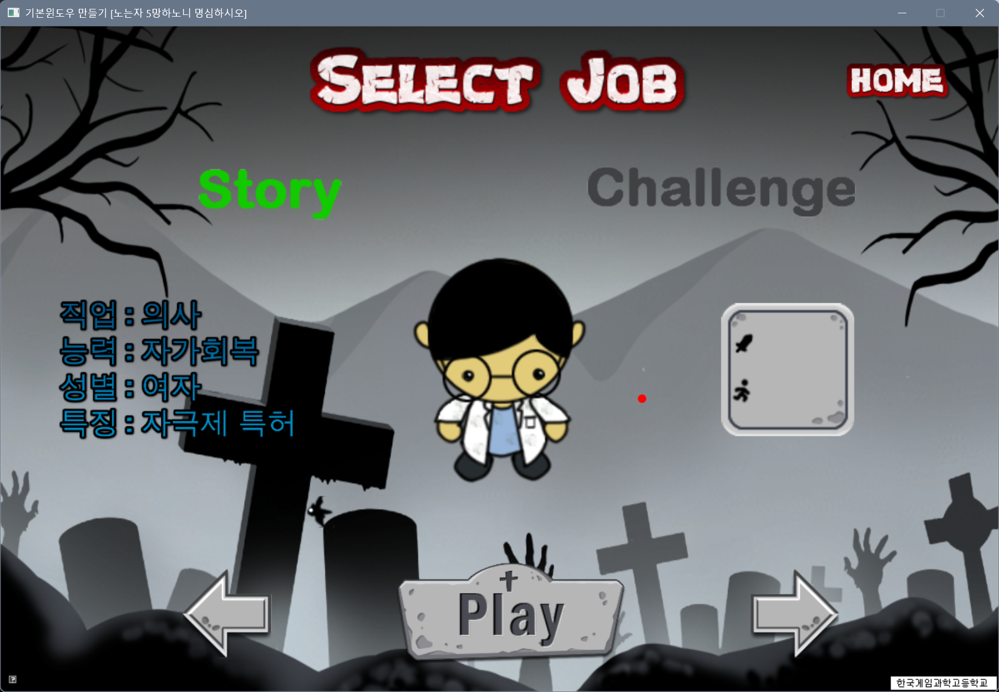
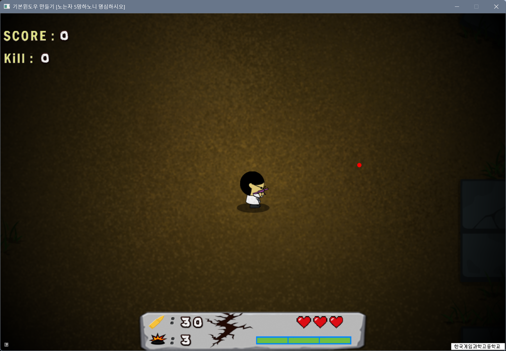
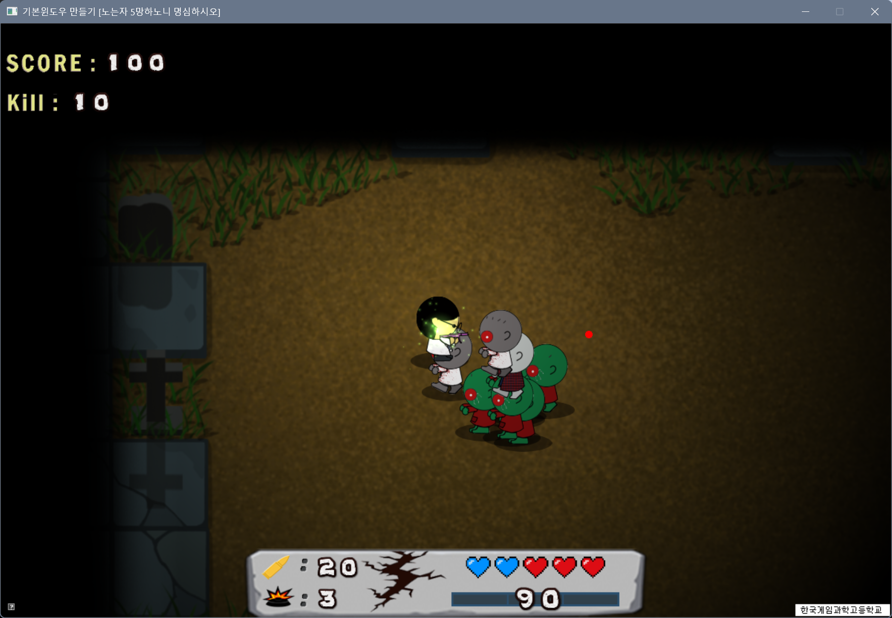
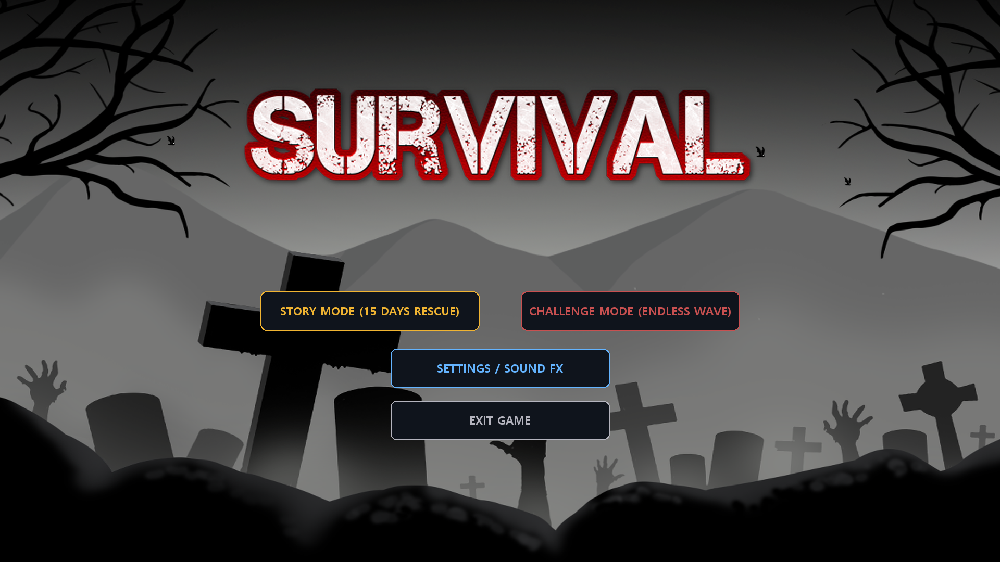
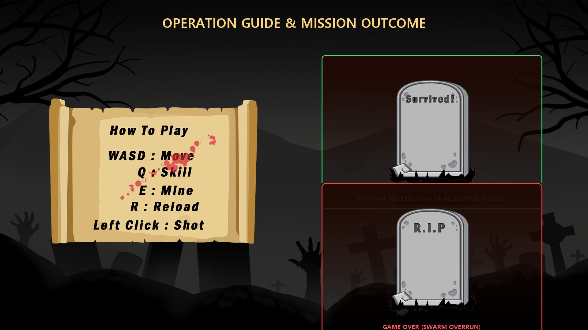
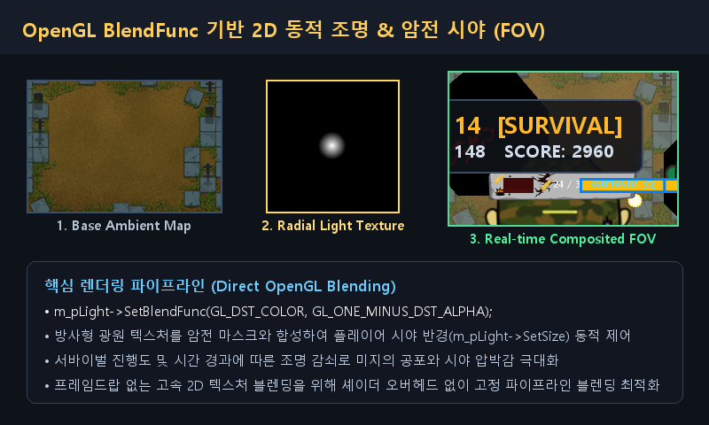
확대 보기 ↗묘지 맵 위에 방사형 조명 마스크(Light_1.png)를 OpenGL 블렌딩(GL_DST_COLOR, GL_ONE_MINUS_DST_ALPHA)으로 합성해 플레이어 주변만 밝히고, 웨이브가 진행될수록 시야 반경(LightSize)을 5.0f → 1.0f 까지 축소해 긴장감을 높였습니다. 상단 점수·처치 수와 하단 탄약·지뢰·3~5칸 체력 하트·스킬 쿨타임을 카메라 좌표에 동기화하고, 체력 2/1 구간에서는 심장박동 사운드와 피격 적색 비네팅으로 위기 상태를 전달합니다.
CUnit 상속 계층으로 회사원(공격력 2배·임시 체력), 의사(자가 치유), 군인(수류탄 포격) 3종 캐릭터의 고유 스킬을 구현했습니다. ScreenToWorld 마우스 좌표와 방향 벡터(See)로 4방향 시선·무기 회전·혈흔 각도(CBlood)를 제어하며, 10발 탄환 풀 사격과 R 재장전(탄창 낙하), E 지뢰(CMine), 근접 3종·원거리 Spitter(CSpecial), 5일차 대형 보스전과 탈출 엔딩(CResultScene)까지 전투 루프를 완성했습니다.
Bullet_VS_MonsterColision) 후 몬스터 체력만 차감되어, 좀비를 맞혔을 때의 타격감과 피격 인지 반응이 부족한 현상이 발생.m_bHit(0.3s) 동안 SetColor(255, 0, 0) 점멸과 플레이어 반대 방향 정규화 벡터(* 3.0) Lerp 넉백을 적용하고, 발포음(Gun.mp3)·4슬롯 처치 사운드(Hit_Zombie.mp3 등)와 피격(CBlood)·처치 잔류(CEffect) 혈흔을 연동.Fog_1/output-0~66.png)를 로비·결과 씬 배경 위에 반투명하게 얹어 연속 재생하려 했으나, 기존 CEMAnimation(67) 방식으로는 의도한 반투명 합성과 연속 안개 연출이 정상 구현되지 않음.SetBlendFunc(GL_DST_COLOR, GL_ONE) 와 SetAlpha(0.5f) 를 적용해 검은 배경이 뒤 배경 아트를 가리지 않고 반투명하게 합성되도록 조정하고, CEMPlane* m_pFog[67] 배열을 적재해 CFog::Update 에서 0.15s 주기로 0 ↔ 66 프레임을 순차 토글(SetShow)하는 왕복 애니메이션 루프를 직접 구현.Load · Logo · Menu · Method
로딩·타이틀을 거쳐 Story/Challenge 모드와 3종 생존자 능력치를 확인·선택하고 조작 가이드(Method) 안내 후 진입
CIntro
Story 모드 진입 시 무전·헬기 비행과 폭발 애니메이션을 연출하며 마우스 클릭 시 즉시 Skip 하여 전투로 전환
CGun · CBullet · CBlood · CEffect
ScreenToWorld 조준 회전과 10발 탄환 풀 사격·재장전(CMagazine), 적색 점멸·넉백·사운드·방향성/잔류 혈흔 처리
CUnit · CHero · CMine · CMonster
Q 전용 스킬(버프·치유·수류탄)과 E 지뢰 배치, 근접 3종·원거리 Spitter·5일차 대형 보스전 및 일차별 시야 축소(LightSize)
CUI · CPopupWinRoot · CResultScene
카메라 추종 HUD·심장박동 경고·ESC 팝업을 동기화하고, Day 15 방어 조건 달성 또는 사망 시 점수·처치 통계 결과 씬 전환
CPopupWinRoot UI & 안개 연출(Load · Logo · Menu · Method · Game · Result) : D_SCENE 씬 전환과 카메라 추종(D_CAMERA) 일시정지·설정·종료 팝업, AABBvsRay 마우스 오버 처리, 로비·결과 씬 67프레임 왕복 안개(CFog)·박쥐 배회 연출 구현CUnit 상속 3종 생존자 & 스킬(CMan · CDoctor · CSoldier) : CHero::HeroInfoUpdate 템플릿으로 상태·쿨타임·HUD 를 연동하고, 공격력 2배/임시 체력 버프(CMan)·자가 치유/10초 초과 복귀(CDoctor)·수류탄 포격(CGrenade) 구현CGun · CBullet · CBlood · CEffect) : ScreenToWorld 방향 내적·외적으로 4방향 스프라이트·총구 회전·혈흔 입사각을 산출하고, 10발 탄환 풀·30발 R 장전(CMagazine)·적색 점멸·넉백·혈흔 적용Spitter · 5일차 보스 웨이브(CMonster · CSpecial · CMine) : 40슬롯 몬스터 풀(CNormal_1~3)과 45슬롯 그림자(CShadow), 원거리 Spit 투사체(CSpecial), 단일 재사용 지뢰(CMine) 및 5일차 0번 슬롯 대형 보스전(BigSizeMonster) 구성CMap · CUI · CHp) : Light_1.png 마스크(GL_DST_COLOR, GL_ONE_MINUS_DST_ALPHA) 크기 일차별 감쇠(5.0f → 1.0f), 폭발·피격 CameraShake(Lerp) 및 체력 2/1 심박음 전환 구현D_SOUND(FMOD Ex 래퍼) 채널 분기 오디오 & 보조 리소스 조달 : BGM·무전·총성·장전·폭발·심박음과 4슬롯 중복 회피 몬스터 효과음(MonsterSound)을 분리 재생하고, 2인 협업 중 필요한 보조 이미지·사운드 리소스 직접 조달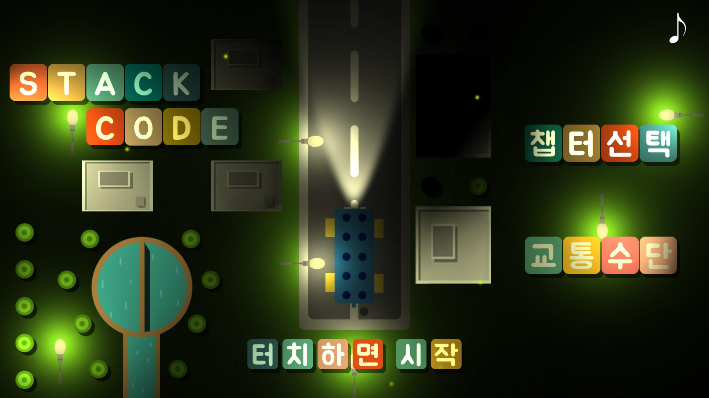
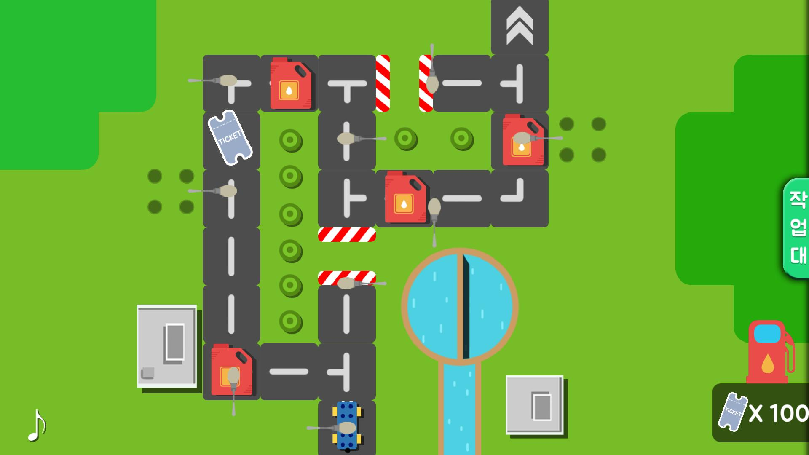
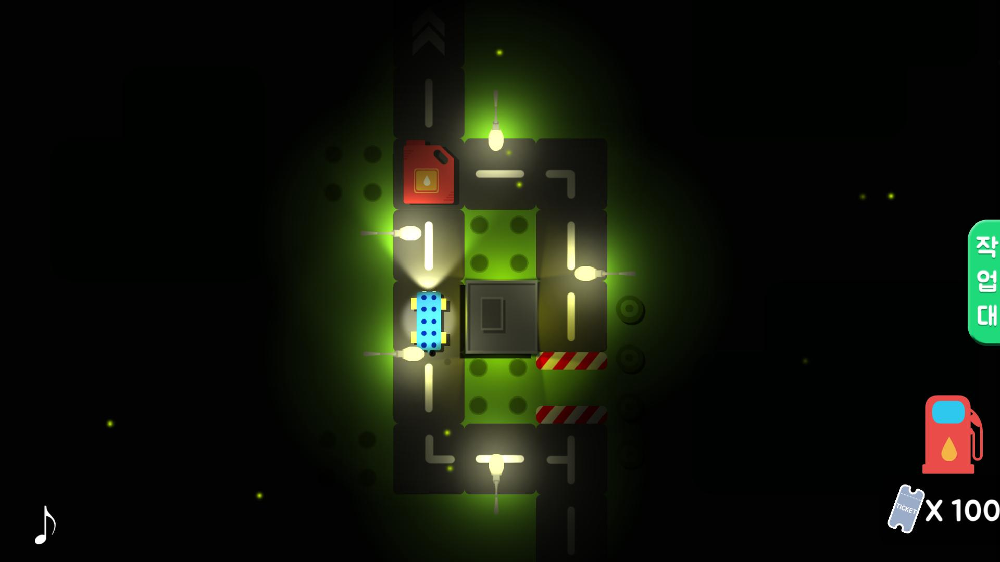
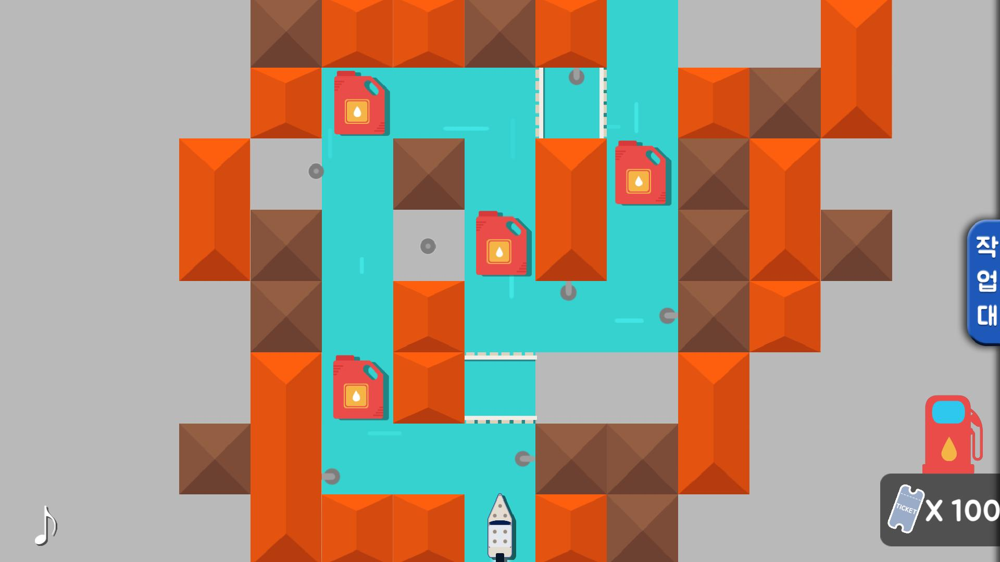
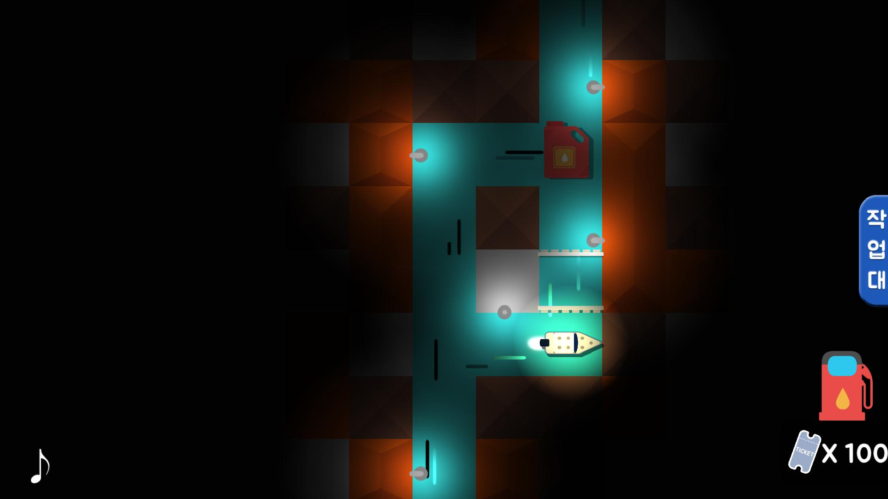
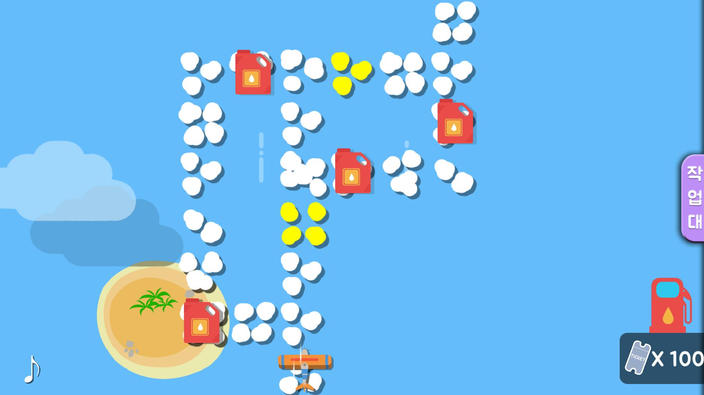
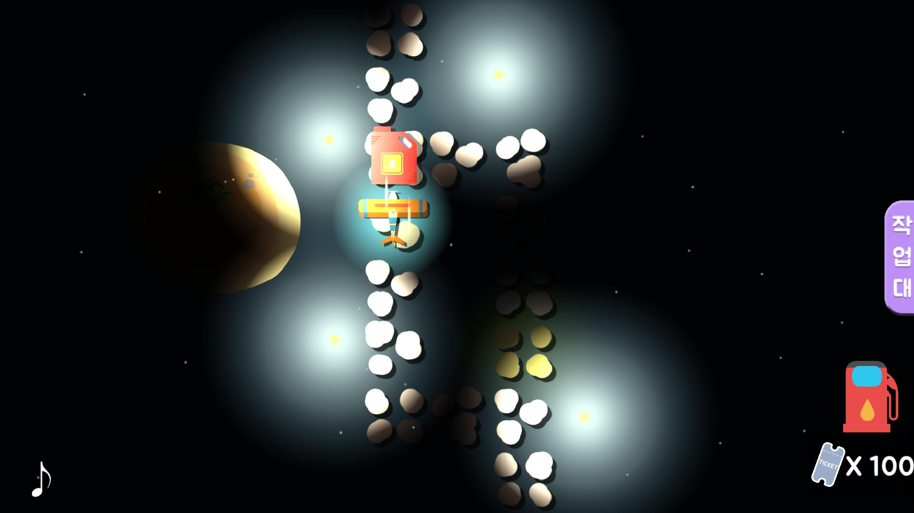
작업대에 배치한 블록 목록을 Elements enum 명령어로 변환해 Dictionary<int, Elements> Order 에 적재하고, index 를 명령 포인터처럼 다루며 순차 해석합니다. 반복 블록(for · 여기까지)은 시작/종료 인덱스(Where, Where_End)와 반복 횟수(Times)를 분리 관리해 루프 재진입 시 포인터를 되감고, 실행 전 Play_Button 단계에서 for / 여기까지 짝 불일치·순서 역전·빈 입력값·기름 소진 여부를 선제 검증해 런타임 오류를 차단합니다.
밤 챕터는 타일맵과 오브젝트에 Built-in Sprites/Diffuse 기반 머티리얼(Road.mat)을 적용하고 베이스 틴트(_Color)를 어둡게 낮춰, 배치된 Spot Light(차량 전조등)와 Point Light 가 비추는 영역만 시야로 드러나도록 구성했습니다. 맵 내 가로등 아이템(Light_Item)을 밟으면 Active.Turn() 트리거로 씬 내 Lights 그룹의 Animator 를 호출해 주변 가로등을 일괄 점등합니다.
ChangeChar · Press · SoundMng
자동차·배·비행기 3종 탈것과 낮/밤 챕터를 선택해 SceneManager 로 해당 스테이지에 진입
Node · Info · Change · GameMng
팔레트의 방향 3종과 반복/여기까지 블록을 작업대로 드래그해 배치하고, 길게 눌러 축소 삭제
GameMng.Play_Button
for / 여기까지 짝·순서 일치, 빈 입력값, 최대 10회 기름 게이지 잔량을 검사해 오류 경고
Player · GameMng.Update
명령 포인터(index) 이동과 함께 실행 중인 블록 색상을 실시간 보간 강조하며 1.33f 전진·회전
Load.data.Save · LoadLevel
도착(End) 시 다음 스테이지 해금 및 save.json / ticket.json 분리 저장, 이탈 시 재시도 안내
Elements · Dictionary · Looping) : 작업대 블록을 Elements enum으로 매핑해 Dictionary<int, Elements> 포인터로 해석하고, for / 여기까지 인덱스 리스트(Where · Where_End)와 코루틴으로 중첩 루프 되감기 구현Node · Info · Change) : 프리팹 Instantiate 후 캔버스 최상위 부모 재할당(Change)과 RectTransform 영역 판정(Mouse_Collision)으로 드래그를 처리하고, fillAmount 게이지 기반 롱프레스 축소 삭제 및 수량 복구 구현BlockData · InfoData) : Stage_0~10.asset 11종으로 스테이지별 블록 제한 여부 및 사용 가능 수량을 분리해, 씬 로직 수정 없이 데이터 교체만으로 난이도 밸런싱 가능Road.mat · Spot/Point Light · Active) : Sprites/Diffuse 기반 베이스 틴트 감쇠와 광원(Spot Light · Point Light)을 결합해 시야 탐색을 유도하고, 전구 아이템 획득 시 Lights 그룹 일괄 점등 구현Scenes/Morning·Night) : 자동차·배·비행기 고유 테마(도로·물길·구름)와 낮/밤 배경 팔레트, CompositeCollider2D 인접 타일 병합으로 경로 이탈 오판 없이 총 66개 스테이지 구성GameMng.Play_Button · Player.Died) : for / 여기까지 짝 및 인덱스 순서 불일치, 잔여 기름(10회 행동 제한), 길 이탈(OnTriggerExit2D)을 감지해 어린이 대상 안내 문구 출력JsonUtility 기반 진행도 & 티켓 분리 영속화(Load.cs · save.json · ticket.json) : 진행도·해금 여부와 스테이지별 티켓 획득 이력을 2개 JSON 파일로 분리 저장해, 스테이지 재도전 시 티켓 중복 획득을 원천 방지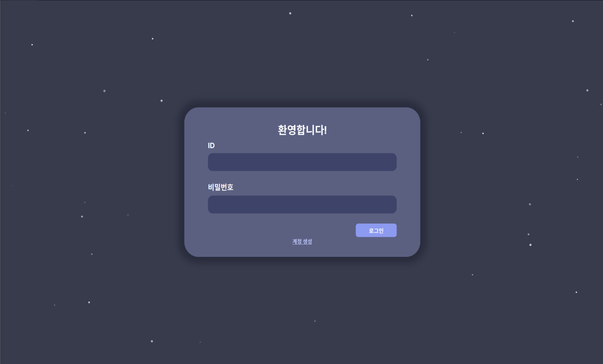
독립된 8개 Node.js 마이크로서비스(auth·menu·game·socket 등)와 3개 인프라(Nginx Proxy Manager·Redis·MySQL)를 격리된 cloud bridge 네트워크로 묶고, Docker Compose v3.8로 컨테이너 의존성(depends_on)과 포트 매핑을 통합 제어.
Express 세션 스토어를 connect-redis 로 중앙 Redis 컨테이너와 연결하고, .test.com 도메인 쿠키(connect.sid)를 공유해 test.com(HTTP)과 socket.test.com(WebSocket) 간 인증 세션 정합성을 실시간 유지.
.vmx 설정 파일을 열어 실제 참조 대상 .vmdk 파일명을 특정한 뒤, 해당 .vmdk 파일을 IDE(VSCode)로 직접 열어 바이너리 텍스트 로그 내에 잔류한 소스 코드 블록을 검색(Ctrl+F)하여 유실된 코드를 온전히 복구.Upgrade $http_upgrade) 지원 설정을 적용하기 어려운 제약이 발생.test.com)과 실시간 웹소켓 전용(socket.test.com)으로 분리 구성하고, socket.test.com 프록시 호스트에서 웹소켓 지원을 활성화한 뒤 socket/app.js 내 CORS 출처(origin: "http://test.com", credentials: true)와 .test.com 세션 쿠키를 연동해 실시간 통신 파이프라인을 구축.dotenv 모듈을 개별 호출하여 동일한 .env 파일 경로 참조와 환경 변수 파싱 코드를 중복 실행하는 최적화 및 유지보수 비효율이 발생.dotenv 의존성을 제거하고, docker-compose.yml 상위에서 .env 변수를 로드해 각 컨테이너 실행 시 환경 변수로 직접 주입(environment: DB_HOST, DB_USER, REDIS_HOST 등)함으로써 중복 코드를 제거하고 설정 주입 파이프라인을 일원화.test.com · socket.test.com
일반 HTTP 웹 페이지 및 API 요청은 test.com 으로, 실시간 양방향 소켓 통신은 socket.test.com 으로 서브도메인을 분리하여 진입
proxy (Nginx Proxy Manager:80/443)
1.conf 에서 /auth/, /game/, /create/ 등 6개 경로를 해당 컨테이너의 8000번 포트로 전달하고, 2.conf 에서 웹소켓 프로토콜 헤더를 socket 컨테이너로 프록시
redis (connect-redis:6379)
중앙 Redis 인메모리 스토리지의 myapp:session: 접두사 세션을 실시간 조회하여 분산 마이크로서비스 환경에서도 일관된 사용자 인증 상태 유지
socket (Node.js:8000) · Socket.IO
Socket.IO 전용 컨테이너가 일반 웹 API와 독립되어 빙고 맵 상태 동기화, 플레이어 이동, 충돌 검증 및 실시간 패킷 전송을 전담
mysql (mysql:8.0:3306)
회원 계정 정보, 전적, 랭킹 및 게임 결과 기록을 mysql-data 영속 볼륨에 안전하게 저장 및 동기화
EJS · WebSocket Broadcast
서버 사이드 EJS 템플릿으로 메뉴·방 목록 뷰를 렌더링하고, Socket.IO 룸 이벤트를 통해 대전 상대방에게 실시간 좌표와 게임 상태를 브로드캐스트
auth, tutorial, menu, discover, create, join, game, socket)와 3개 인프라(proxy, redis, mysql)를 cloud bridge 네트워크로 격리 및 연동test.com 경로 기반 6개 API 라우팅(/auth/, /game/, /create/ 등) 및 socket.test.com 웹소켓(Upgrade, Connection 1.1) 분리 라우팅 구축.test.com 도메인 단위 connect.sid 쿠키를 공유하고, Socket.IO 핸드셰이크 단계에서 sessionMiddleware 를 실행해 실시간 소켓 연결 시 사용자 인증 동기화dotenv 모듈 호출을 제거하고 상위 Compose 명세에서 ${DB_HOST_APP}, ${REDIS_HOST_APP} 등을 컨테이너 환경 변수로 주입해 중복 코드 제거sphere.js, unit.js, razer.js, bullet.js 등 순수 JavaScript 벡터 수학(vec2.js) 기반 대전 로직 구현 및 Socket.IO 패킷 브로드캐스팅.vmx 디스크 매핑 정보를 추적하고 VSCode IDE로 .vmdk 텍스트 블록을 직접 검색하여 소스 코드 유실을 방지한 복구 경험하 난이도는 30% 무작위 및 깊이 1 탐색, 중 난이도는 깊이 2 Minimax 탐색을 수행합니다. 상 난이도는 깊이 3 탐색과 함께 소환 즉시 적을 타격하는 '소환 스나이핑'을 우선 검토하며, 극악 난이도는 장군 위기 시 방어벽 소환 및 즉시 외통수 소환을 선제 탐색한 뒤 깊이 4 Minimax를 실행합니다. 모든 난이도에서 피포획자와 포획자의 가치 차이를 계산하는 MVV-LVA 사전 정렬을 적용해 Alpha-Beta 가지치기 컷오프 효율을 극대화했습니다.
메인 메뉴, 난이도 선택 카드, 장기판·손패·코스트를 보여주는 플레이 화면, 장군/외통수 알림 배너, 결과 통계를 보여주는 게임오버 모달까지 UI Canvas 없이 UI Toolkit(VisualElement·USS)만으로 코드 기반 구축했습니다. 기물 자체도 Painter2D로 직접 드로잉한 정8각형 커스텀 엘리먼트입니다.
PlayerState
코스트 +2 회복(최대 10), 기물 처치 시 +1 추가 획득 (필드 총 코스트 20 상한)
PlayerState
상시 4장의 손패 유지, 소환·버리기(-1 코스트)로 카드 소모 시 기물 가중치(졸 35% ~ 차 8%) 추첨으로 즉시 새 카드 보충
SpawnRuleValidator
졸(4선), 차·마·상(1선), 포(포진지) 빈 구역 검증 및 소환 즉시 장군(Direct Check) 금지 필터링 후 배치
MoveRuleFactory · IMoveRule
기물별 IMoveRule 전략 패턴(King·Advisor·Elephant·Horse·Chariot·Cannon·Pawn)과 궁성 내 대각선 이동 규칙 검증
JanggiAIController · BoardEvaluator
MVV-LVA 수 정렬 기반 Alpha-Beta Minimax(깊이 1~4) 및 소환 스나이핑·외통수 선제 탐색으로 소환과 행마를 결정
GameRuleValidator · AdMobManager
장군·외통수·빅장(面將) 판정, 패배 시 BoardReviewData 복기 분석 제공 및 애드몹 보상형 광고 시청으로 부활 기회 제공
IMoveRule 전략 패턴(King/Advisor/Elephant/Horse/Chariot/Cannon/Pawn)으로 장기 표준 행마법을 분리 구현하고, MoveRuleFactory 로 런타임 조회BoardEvaluator 가중치와 AI 판단에 반영HexagonElement 와 Painter2D 기하 공식(tan 22.5° ≈ 0.4142)으로 정8각형 기물과 이중 림(Inner Rim) 라인을 벡터로 직접 렌더링하고, Screen.safeArea 반응형 인셋 적용RewardedInterstitialAd)를 연동하고, AdMobBuildPreProcessor 로 빌드 시에만 로컬 시크릿 상용 키를 주입한 뒤 테스트 ID로 자동 롤백하도록 빌드 파이프라인 보안 구축[InitializeOnLoad] 에디터 자동 동기화(LocalizationUpdater)로 한국어/영어 테이블을 통합 관리하고 런타임 무중단 언어 전환 구현card, usage, custom, config 4개 테이블로 구성된 정규화 스키마를 설계했습니다. cardID 외래키 기반으로 지출 내역을 연계하고 Batch 트랜잭션 쿼리로 잔여 한도 갱신과 데이터 무결성을 안정적으로 유지합니다.
화면 렌더링 위젯과 데이터 로직을 CreateUsageProvider, InfoMng, CustomMng 등 역할별 ChangeNotifier 로 분리했습니다. 지출 입력 폼 변경 시 해당 Provider만 notifyListeners() 를 호출하고 구독 위젯만 재렌더링하여 위젯 트리 전체 리빌드 없이 화면 갱신 딜레이를 최소화했습니다.
SharedPreferences 에 지출 목록을 JSON 문자열 형태로 직렬화하여 저장했으나, 화면에서 지출을 삭제해도 실제 로컬 데이터가 동기화되지 않거나 로컬 데이터가 변경되어도 화면 UI가 일치하지 않는 비동기 동기화 누락 문제가 지속 발생. 또한 카드별(cardID) 분리 조회, 잔여 한도 연산, 정렬 및 정합성 검증의 구조적 한계에 직면.sqflite 로 전면 마이그레이션하여 card, usage, custom, config 4개 테이블로 정규화 스키마를 재구축. cardID 외래키 기반의 관계형 쿼리(SELECT * FROM usage WHERE cardID = ?)를 구성하고, DatabaseMng 와 InfoMng 간 Provider 상태 파이프라인을 결합하여 DB 트랜잭션과 메모리 상태, 화면 렌더링 간의 양방향 동기화를 100% 일치하도록 보장.DELETE 쿼리로 행을 물리 삭제하면 과거 지출 이력이 완전히 소실되어 사용자가 지출 취소 내역을 확인할 수 없으며, 카드 잔액 롤백 시 잔여 한도(remain) 계산의 정합성과 감사 추적성(Audit Trail)이 깨질 위험 발생.DatabaseMng.deleteUsage 에서 물리 삭제를 배제하고, 기존 행을 removed = 1 로 소프트 딜리트(Soft Delete) 갱신한 뒤 카드 현재 잔액을 즉시 환불(cur + cost) 처리. 동시에 환불 시점의 잔여 잔액을 기록한 신규 상계 레코드(removed = 2, 취소 내역)를 추가 삽입하여 회계 장부 방식의 영속적 이력 보존과 UI상의 취소 내역 시각화를 동시에 달성.DatabaseMng.init · MultiProvider
DatabaseMng 를 Singleton 및 eager 로딩(lazy: false)으로 구성하여 비동기 await init() 완료 후에만 하위 MultiProvider 와 화면 위젯 트리를 안전하게 마운트
AddScreen · CustomTextField · CreateUsageProvider
소비 금액 및 항목 입력 시 CreateUsageProvider 가 변경 사항을 즉시 감지하여 상단 카드 프리뷰의 실시간 잔여 한도(remain)를 즉각 갱신
DatabaseMng (card · usage · custom · config)
cardID 외래키를 기반으로 usage 테이블에 소비 레코드를 삽입하고, card 테이블의 cur 잔액을 원자적으로 차감하여 데이터 정합성 보장
InfoMng · notifyListeners()
DB 연산 완료 후 InfoMng 가 활성 카드 지출 리스트를 메모리에 갱신하고 notifyListeners() 를 호출해 필요한 위젯만 선택적으로 재렌더링
UsageListView · DataCard · flutter_animate
flutter_animate 마이크로 모션으로 최신 지출 리스트를 시각화하고, AnimatedContainer 슬라이드 제스처로 우측 삭제 버튼을 노출
cardID 외래키 연계를 통해 카드별 소비 내역 분리 조회, 잔여 한도 집계, 정렬 쿼리 속도 최적화removed = 1 마킹 및 잔액 환불과 동시에 removed = 2 상계 레코드를 삽입하여 취소 이력 감사 추적성(Audit Trail) 확보DatabaseMng, InfoMng, CustomMng, CreateUsageProvider 로 전역 데이터와 화면 입력 상태를 분리해 불필요한 전체 위젯 트리 리빌드 방지Dismissible 대신 AnimatedContainer(90ms, Curves.fastOutSlowIn)를 활용해 터치 시 카드 본체는 좌측으로 이동(-40px)하고 우측 삭제 버튼(50px)이 노출되는 독자적 UX 구현custom 테이블과 CustomMng 를 통해 자주 쓰는 아이콘·금액·품목명을 프리셋으로 저장하여 1회 터치로 즉시 지출을 기록하는 편의 기능 제공Android 네이티브에서 NotificationListenerService 를 커스텀 구현해 transport 미디어 알림을 선별 파싱하고, EXTRA_LARGE_ICON 비트맵을 PNG 바이트 배열로 변환했습니다. 기성 패키지 없이 직접 설계한 MethodChannel 과 EventChannel 로 곡 메타데이터와 앨범 아트를 Flutter UI에 실시간 스트리밍합니다.
TimerProvider(1초 타이머), AudioProvider(미디어 메타데이터 및 제어), ThemeProvider(5종 무드 컬러)로 상태 모델을 독립 분리했습니다. 1초마다 시계가 갱신될 때 시간 텍스트 위젯만 국소 렌더링되도록 격리하여, 앨범 아트 및 플로팅 애니메이션 버블의 불필요한 전체 위젯 리빌드를 원천 차단했습니다.
NotificationListenerService 에서 패키지명(contains("music")) 및 알림 카테고리(contains("transport")) 필터링을 구축. Icon 객체에서 비트맵 추출 후 Arrays.equals(image, img) 로 이전 앨범 아트와의 바이트 일치 여부를 사전 검사해 변경 시점에만 전송하고, bitmap.recycle() 로 네이티브 힙 메모리를 즉시 반환하여 메모리 누수를 원천 차단.Image.memory)와 flutter_animate 로 무한 반복 부유하는 다수의 원형 버블 위젯까지 매 초 전체 리빌드되어 프레임 드롭(Jank)이 발생.TimerProvider, AudioProvider, ThemeProvider 로 완전히 분리. 1초마다 발생하는 Timer.periodic 시간 변경 이벤트는 TimerProvider 만 구독하는 시간 표시 위젯에 한정시키고, 앨범 아트 및 플로팅 애니메이션 컴포넌트는 해당 Provider 변경 시에만 반응하도록 렌더링 범위를 격리하여 60fps의 매끄러운 렌더링을 유지.NotificationListenerService · onNotificationPosted
백그라운드 서비스가 시스템 알림 중 패키지명(contains("music"))과 카테고리(transport)를 검증해 미디어 세션 알림만 선별 식별
Notification.extras · EXTRA_LARGE_ICON
Bundle에서 곡명(EXTRA_TITLE), 아티스트(EXTRA_TEXT)를 파싱하고, Icon 객체에서 Bitmap 을 추출해 PNG 바이트 배열로 압축 변환
NotificationObject.dontUpdate · MethodChannel
Arrays.equals 로 직전 앨범 아트와 동일 여부를 검사해 변경 시에만 전송하고, bitmap.recycle() 호출 후 Flutter 채널(example.com/test)로 디스패치
AudioProvider · notifyListeners()
AudioProvider 가 네이티브 바이트 스트림을 수신해 Image.memory 위젯만 선택적으로 갱신하고 불필요한 전체 리빌드 억제
AudioProvider.clicked · Notification.Action.send()
사용자가 UI에서 이전곡/재생/다음곡을 터치하면 platform.invokeMethod("getData$id") 로 전달하고, Native에서 actions[idx+1].actionIntent.send() 를 실행해 제어
WakelockPlus · TimerProvider · ThemeProvider
WakelockPlus 로 화면 꺼짐을 방지하고 1초 주기 타이머로 시계를 독립 갱신하며, 탭 시 5가지 무드 컬러 팔레트를 400ms 부드러운 애니메이션으로 순환 전환
example.com/test, example.com/event)을 직접 설계 및 구현sbn.getPackageName().contains("music") 및 category.contains("transport") 조건을 결합해 시스템의 무수한 알림 중 활성 미디어 세션만 정확하게 선별actions[isMusic ? idx + 1 : idx].actionIntent.send() 로 이전곡·재생/일시정지·다음곡 컨트롤 완벽 지원WakelockPlus.enable() 로 탁상시계 상시 디스플레이를 유지하고, 화면 터치 시 5종 컬러 팔레트가 AnimatedContainer(400ms)로 부드럽게 순환 전환되는 인터랙션 연출기상청 초단기예보의 45분 서버 반영 지연을 고려해 minute < 45 ? 1 : 0 동적 오프셋으로 base_time 을 계산하여 NO_DATA 호출 에러를 방지했습니다. 또한 xml2json 의 Parker 파서를 활용해 중첩 XML 응답을 단일 JSON 맵으로 직렬화하고 5개 기상 지표(기온·하늘·습도·강수량·형태)를 안전하게 추출했습니다.
SKY 코드(1:맑음, 3:구름많음, 4:흐림)에 따라 구름 개수(1개/5개/10개)와 좌표를 동적 생성하고 flutter_animate 의 slideX 무한 왕복 애니메이션을 적용했습니다. 또한 isNight = (hour > 20 || hour < 6) 조건으로 주간(스카이블루)과 야간(네이비) 테마를 AnimatedContainer(400ms)로 자동 전환합니다.
Weather.setDate · minute < 45 ? 1 : 0
기상청 초단기예보 매시 30분 발표 주기 및 45분 데이터 생성 시점을 고려해 현재 분(minute)에 따른 시간대 오프셋을 동적으로 산출
http.get · getUltraSrtFcst (nx=61, ny=120)
기상청 동네예보 초단기예보 API 엔드포인트에 인증키와 격자 좌표(61, 120)를 매핑해 실시간 기상 관측 XML 데이터를 수신
Xml2Json.toParker · jsonDecode · Weather.setData
xml2json Parker 파서로 다중 계층 XML을 JSON 구조로 평탄화하고 T1H(기온), SKY(하늘), REH(습도), RN1(강수량), PTY(강수 형태)를 파싱
Weather.getSkytoInt · WaveWidget · flutter_animate
하늘 상태에 따라 1/5/10개의 구름 위젯 좌표를 동적 계산해 무한 슬라이드(slideX)를 적용하고, 3중 불투명도 WaveWidget 물결 효과를 합성
Timer.periodic · limitCount(600s) · WakelockPlus
WakelockPlus 로 화면 꺼짐을 방지하고 1초 주기 타이머로 시계를 표시하며, 600초(10분) 도달 시 API를 자동 재호출하여 최신 날씨 유지
getUltraSrtFcst 엔드포인트를 연결해 기온·하늘 상태·습도·강수량·강수 형태 등 핵심 기상 지표를 실시간 추출toParker() 직렬화를 도입해 복잡한 계층형 XML 응답을 단일 JSON 맵으로 평탄화하여 파싱 안정성 및 유지보수성 확보minute < 45 ? 1 : 0 오프셋 로직으로 정시~44분 사이 데이터 미제공(NO_DATA) 에러를 방지하고 최신 예보를 안전하게 호출slideX(5.5s) 무한 왕복 모션 구현isNight = (hour > 20 || hour < 6) 조건부 AnimatedContainer(400ms)로 직관적인 시각적 무드 연출Timer.periodic 단일 루프에서 시계 카운팅과 10분 주기 API 재호출을 통합 관리하고 WakelockPlus 로 탁상 모니터링 환경 지원비누 제조 공정(CP 냉소법, HP 온소법 고체, HP 페이스트 물비누)에 따라 NaOH/KOH 검화값 누산, 순도 및 DC율 보정, 공정별 차등 수분량(CP: 오일 비율, HP Paste: 잿물×3, HP Solid: 잿물×1.5) 공식을 수학적으로 모델링했습니다. 또한 calculateFat() 을 통해 10종 지방산 조성을 배합 중량 가중치로 곱해 100% 백분율로 정규화했습니다.
DataMng, OilMng, Mng, FileMng 등 8개 전용 Provider로 원시 배합 데이터, 원료 DB, 연산 엔진, 파일 I/O를 완전히 격리했습니다. 비누 4단계, 화장품 6단계 폼 입력 시 불필요한 리빌드를 억제하고, 12개 컬러 팔레트 중 4개 탭(비누·화장품·오일·설정)의 테마 색상을 독립 지정하는 디자인 시스템을 구축했습니다.
permission_handler · FileMng.load
permission_handler 로 외부 저장소 권한을 획득하고 UserData_Recipe/Beauty/Oil/Config 4개 전용 로컬 디렉토리를 초기화
PageMng · OilMng · CustomTextField
비누(CP/HP) 또는 화장품(토너/세럼/로션/크림)을 선택하고, 원료 DB에서 오일을 검색해 중량(g) 및 가성소다 순도·DC율을 단계별 폼에 입력
Mng.calculateLye · calculateWater · calculateFat
NaOH/KOH 검화값 기반 필요 잿물량과 공정별 수분량을 연산하고, 10종 지방산 구성을 오일 비율로 가중 합산해 백분율로 정규화
FileMng.writeFile (.txt) · CSV Import
계산된 레시피를 서버 없이 로컬 .txt 파일로 영구 저장하며, 대량 오일 데이터베이스는 CSV 파일 단위 파싱 및 마이그레이션을 지원
sResultView · circleChart · AnimatedContainer
포화/불포화 지방산 비율을 circleChart 및 커스텀 바로 시각화하고, 4개 탭별 독립 테마 색상과 함께 부드러운 트랜지션으로 렌더링
DataMng, OilMng, Mng, FileMng, PageMng 등 8개 전용 ChangeNotifier 로 상태를 분리해 수십 개 입력 폼 렌더링 병목 제거calculateLye() 로 원료별 검화값 누산 및 순도 보정을 처리하고, calculateWater() 에서 공정별 수분 배합비(콜드: 오일비, 페이스트: 잿물×3, 핫: 잿물×1.5)를 정밀 연산calculateFat() 에서 오일별 라우르산·올레산·팔미트산 등 10종 지방산 벡터를 배합비로 내적 연산하고 총 중량 대비 100% 백분율로 정규화해 시각화path_provider 기반 4개 디렉토리에 .txt 직렬화 저장 및 CSV 파일 자동 파싱 파이프라인 구축AnimatedContainer 로 부드럽게 전환하는 맞춤형 UX 구현
AI가 분석한 시선 집중도 좌표를 HTML5 Canvas 위에 가우시안 블러·그라디언트 기반 히트맵으로 실시간 시각화하고, 이미지 해상도에 맞춘 반응형 캔버스 스케일링으로 정확도를 확보했습니다. 로컬 환경에는 DB 인프라가 갖춰져 있지 않아, 세션·DB 의존 로직을 걷어낸 별도 데모 서버를 구성해 업로드 → AI 분석 → 시각화로 이어지는 핵심 파이프라인만 독립적으로 검증했습니다.
모든 컴포넌트가 --primary100, --background100 같은 시맨틱 CSS 변수만 참조하도록 스타일을 설계해, body에 클래스 하나만 바꿔도 색상 팔레트 5종과 라이트/다크 모드가 화면 전체에 동시에 반영되는 테마 시스템을 구축했습니다. 색상 선택 상태와 다크모드 여부, 시스템 다크모드 감지 결과를 하나의 값으로 합성해 hidden input에 동기화하고, 저장 시 서버로 전송해 다음 접속에도 유지되도록 만들었습니다.
Multer 미들웨어로 다중 페이지 이미지 파일을 수신해 사용자 ID별 격리 디렉토리에 안전하게 저장
AI 분석 실행 전 파일명·경로·크기를 images 테이블에 '대기' 상태로 선기록하여 비정상 종료 시 추적성 보장
child_process.spawn으로 ai_tracker.py를 호출하고 cuSPARSELt·NCCL CUDA 환경변수(LD_LIBRARY_PATH)를 런타임 주입
Python 프로세스의 표준출력(stdout) JSON 스트림에서 생성된 히트맵·스캔패스 경로 및 균형도·집중도 점수 파싱
analysis_results 테이블에 산출물 경로와 점수를 기록하고 images 테이블 상태를 '완료'로 일괄 트랜잭션 업데이트
JSON 응답 데이터를 수신해 원본 디자인 위에 가우시안 히트맵 레이어 및 1~17번 순차 시선 이동 궤적을 캔버스 오버레이 시각화
/storage/uploads/{userId}/ 격리 디렉토리에 시안을 보관하고, AI 분석 시작 전 images 테이블에 원본 경로와 '대기' 상태를 기록하여 장애 시 추적성 확보child_process.spawn 기반 Python AI 추론 연동: ai_tracker.py 실행 시 LD_LIBRARY_PATH 환경 변수에 cuSPARSELt 및 NCCL 라이브러리 경로를 런타임 주입해 CUDA GPU 가속 연동JSON.parse 로 파싱하고 analysis_results 삽입 및 images 상태를 '완료' 로 원자적 갱신눈 깜빡임, 입 모양(A/O/M), 귀 움직임 등을 각각 독립적인 쉐이프 키(Shape Keys)로 분리 제작해, 복합 표정 블렌딩 시 메쉬 간섭 및 버텍스 뒤틀림을 원천 차단했습니다. 유니티 SkinnedMeshRenderer와 FaceAnimator C# 코루틴을 연동해 실시간 가중치(0~100) 보간을 구현했습니다.
손가락 구분 없이 뭉툭한 포수 글러브 메쉬에 포켓(웹)과 손목 경첩 부위만 별도 본으로 분할하고 웨이트 페인트를 정밀 보정했습니다. 공을 포구하는 순간 포켓 부위만 탄력적으로 오므라들고 손등 외곽 메쉬는 뒤틀림 없이 형태를 유지하도록 설계했습니다.
생성형 AI(Varco, Gemini)로 캐릭터(공룡, 고양이, 버섯, 펭귄)의 정면·측면 턴어라운드 레퍼런스를 추출해 모델링 기준 좌표계 수립
레퍼런스를 가이드로 Blender에서 Mirror 및 Subdivision 모디파이어를 활용해 실시간 렌더링에 최적화된 로우/미드 폴리곤 메쉬 조형
캐릭터 척추, 사지 및 포수 글러브 경첩 등 핵심 관절 부위에 모션 제어를 위한 계층적 본(Bone) 아마추어 구조 설계
Weight Paint 모드에서 본별 영향 가중치를 그라디언트로 정밀 보정하여 관절 굴절 및 글러브 오므림 시 버텍스 찢어짐 방지
눈 깜빡임, 입 모양(A/O/M), 귀 움직임 등 개별 표정 모핑 채널을 독립 쉐이프 키로 분리 등록해 상호 간섭 없는 표정 연출
심(Seam) 배치 기반 UV 전개 및 Photoshop CS6 핸드페인팅으로 텍스처 맵을 제작하고 Unity 호환 FBX 에셋으로 최종 내보내기
SetBlendShapeWeight)으로 실시간 선형 보간 제어하는 인터페이스 구축